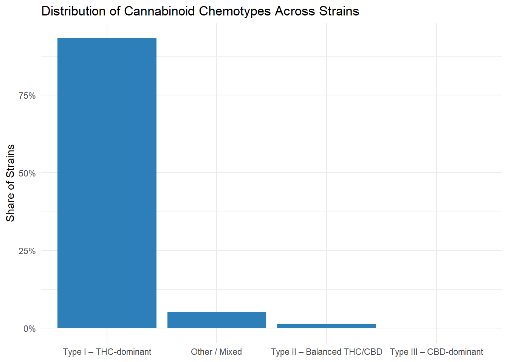
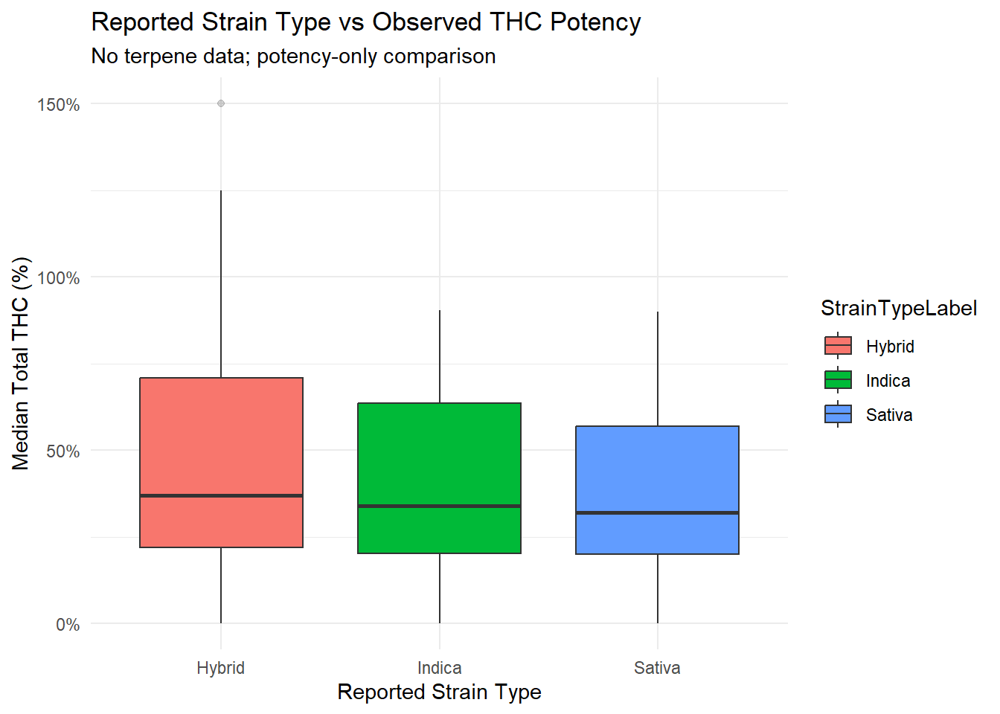
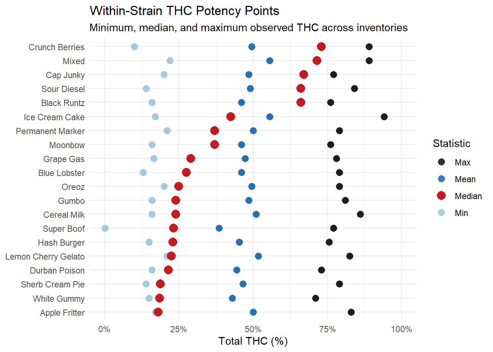

What CCRS Lab Data Really Tells Us About Cannabis Strains, Potency, and Product Form
Using Washington CCRS data to separate genetics, marketing labels, and market reality
Lab Results
Strains
THC
CBD
This analysis uses Washington’s CCRS lab testing data to examine how reported strain labels and product form align with observed cannabinoid potency and chemotype outcomes. By separating genetic intent from marketing conventions, the report highlights where laboratory results reinforce—or contradict—commonly used strain classifications. The findings clarify what CCRS data can reliably tell us about cannabis genetics, potency, and real-world market behavior.
The Bottom Line Up Front
The data suggest that strain identity, potency, and product form are distinct dimensions of the market — and should be analyzed as such.
Analysis of Washington’s Cannabis Central Reporting System (CCRS) lab data shows three clear and important findings for the cannabis industry:
Most strains in the regulated market are THC-dominant, regardless of whether they are labeled Indica, Sativa, or Hybrid.
Reported strain type does not meaningfully predict THC potency, especially once concentrates are included.
Within the same strain name, observed THC potency can vary dramatically, often spanning flower-level to concentrate-level ranges.
Overview
Strain names and strain types are deeply embedded in cannabis commerce. They shape consumer expectations, retail menus, and even regulatory conversations. At the same time, lab-tested potency is often treated as a proxy for “strength,” “quality,” or “intensity.”
But CCRS data allows us to ask a more rigorous question:
How well do strain labels actually correspond to observed chemistry in the regulated market? CCRS lab results do not include terpene panels, which are required for effect-based classification.
Strain names correspond reasonably well to strain-type labels, but not to a unique or narrow THC potency class across products and inventories.
Strain names in CCRS generally align with reported strain-type labels (Indica, Sativa, Hybrid), reflecting shared genetic and cultural understanding.
Tested THC potency varies widely within the same strain name, driven primarily by product form and processing rather than genetics alone. As a result, strain names are not associated with a single, consistent potency class.
For each strain name with sufficient coverage, we summarized:
Minimum observed Total THC
Mean observed Total THC
Median observed Total THC
Maximum observed Total THC
No terpene data was used in this analysis; this is a potency-only view of the market.
Chemotype Distribution
Among all reported strain types, Type I (THC-dominant) chemotypes dominate.
| Strain Type | Type I – THC-dominant |
|---|---|
| Hybrid | 93.6% |
| Indica | 95.5% |
| Sativa | 90.2% |
Balanced (Type II) and CBD-dominant (Type III) strains exist — but they represent a small minority of what is actually being produced and tested.
Implication: From a chemistry standpoint, most of the regulated market is competing within a relatively narrow THC-dominant space, regardless of branding.
Potency vs Marketing Label (Audit/Regulatory Prep)

Reported Strain Type Does Not Predict Potency
When we compare reported strain type (Indica / Sativa / Hybrid) to observed median THC, the distributions largely overlap.
In other words:
High-THC products appear across all strain types
Low-to-moderate THC products appear across all strain types
No strain type consistently occupies a distinct potency band
This does not mean strain types are meaningless — but it does mean they are not reliable indicators of THC intensity, especially in a market where concentrates are common.
Does Strain Name Imply Narrow Potency?
Within-Strain THC Variability Is Large
The most striking result comes from looking within individual strain names.
For well-sampled strains (five or more inventories), we observe:
Strains with minimum THC near typical flower levels (15–25%)
The same strain names reaching 70–90% THC at the high end
Median values that often sit somewhere in between
In practical terms, this means:
The same strain name can represent very different consumer experiences, depending on product form.
A strain like Blue Dream, Ice Cream Cake, or Grape Gas may appear as:
A mid-20% flower
A 50%+ infused product
An 80%+ concentrate
How does THC spread in Washington

Flower vs. Concentrate Bias
While maximum THC reflects what is technically possible through extraction, the median THC tells a more useful story:
What does this strain usually represent in the market?
Using median THC as a proxy:
Below ~30% THC → Flower-dominated presence
30–45% THC → Mixed flower and concentrate presence
Above ~45% THC → Concentrate-dominated presence
This is not a genetic classification — it is a market representation signal.
The same cultivar can be grown as flower or processed into concentrate and so median THC captured which form dominates real-world inventory.
What This Means for Industry Stakeholders
For Producers and Processors - Strain names alone do not define potency positioning Product form and processing decisions matter more than genetics for THC outcomes. The same strain can serve multiple market segments depending on how it is used
For Retailers - Educating consumers on product form may matter more than strain type. THC ranges associated with a strain name can be much wider than menus suggest.
For Regulators and Analysts - Potency-based policy discussions should distinguish between flower and concentrates. Strain-level aggregation can obscure meaningful variation unless carefully summarized.
Aligning state cannabis policy with market realities requires treating strain identity, potency, and product form as related but independent factors, rather than collapsing strain names into a single measure of THC intensity, particularly in transactions toward medical cannabis compliance.
CCRS lab results include cannabinoid potency but do not consistently include terpene profiles. As a result, classifications in this analysis reflect cannabinoid chemotypes and potency intensity rather than effect-based indica/sativa distinctions.
Join the Discussion
Your insights help drive better transparency and smarter policy in Washington’s cannabis industry.